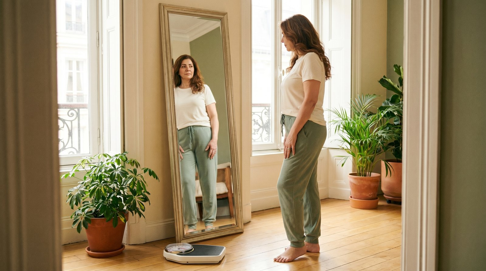
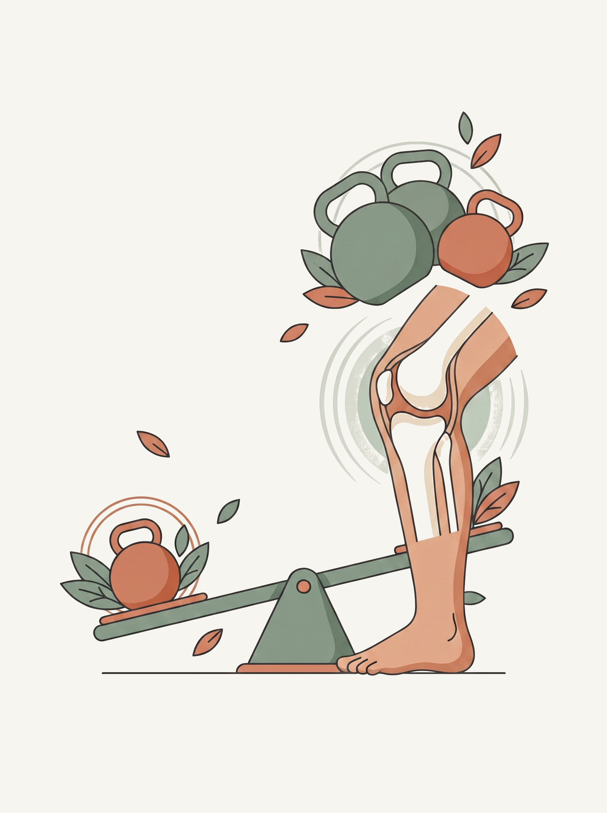
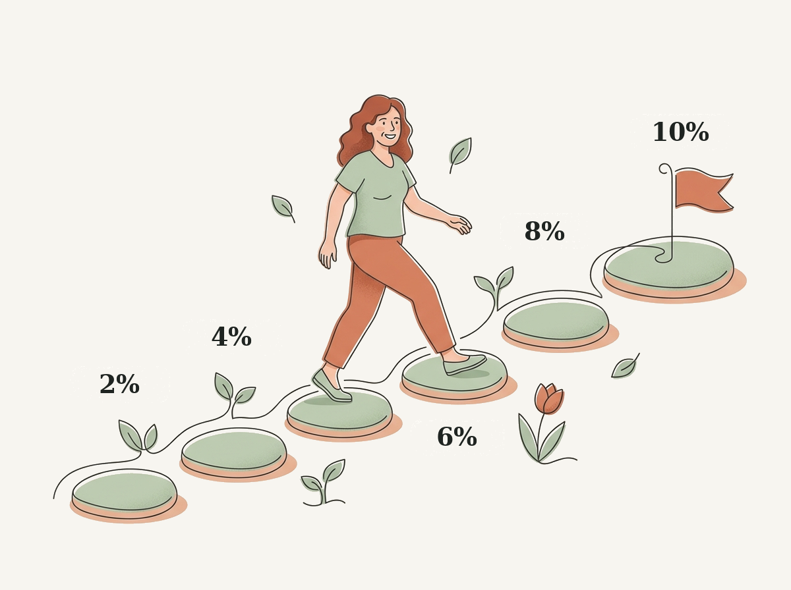
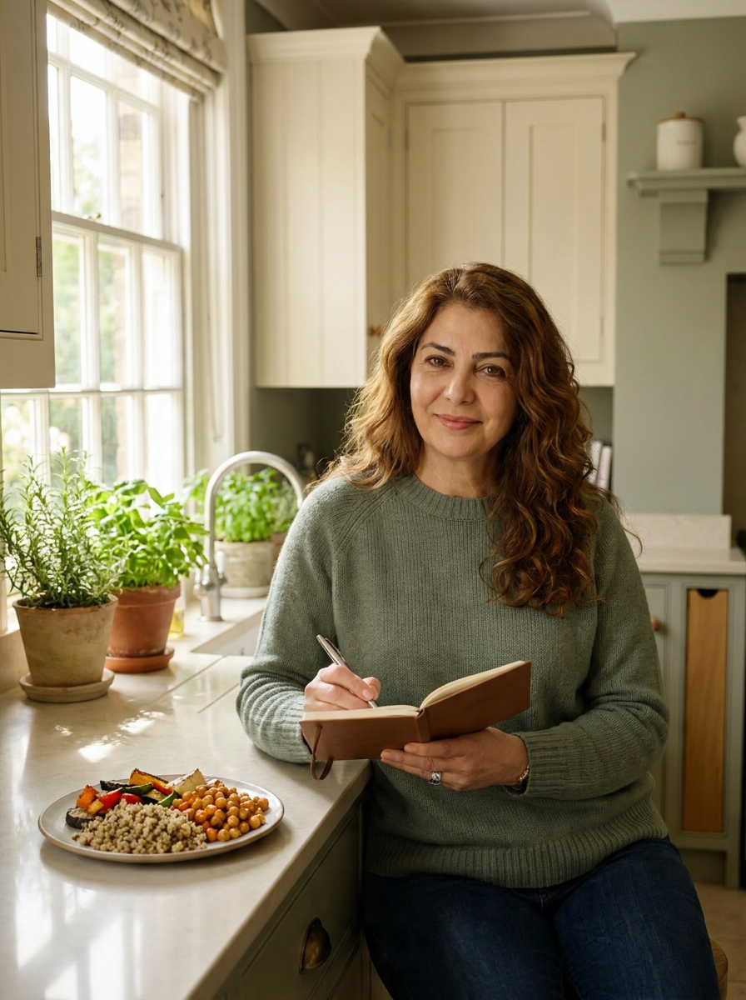
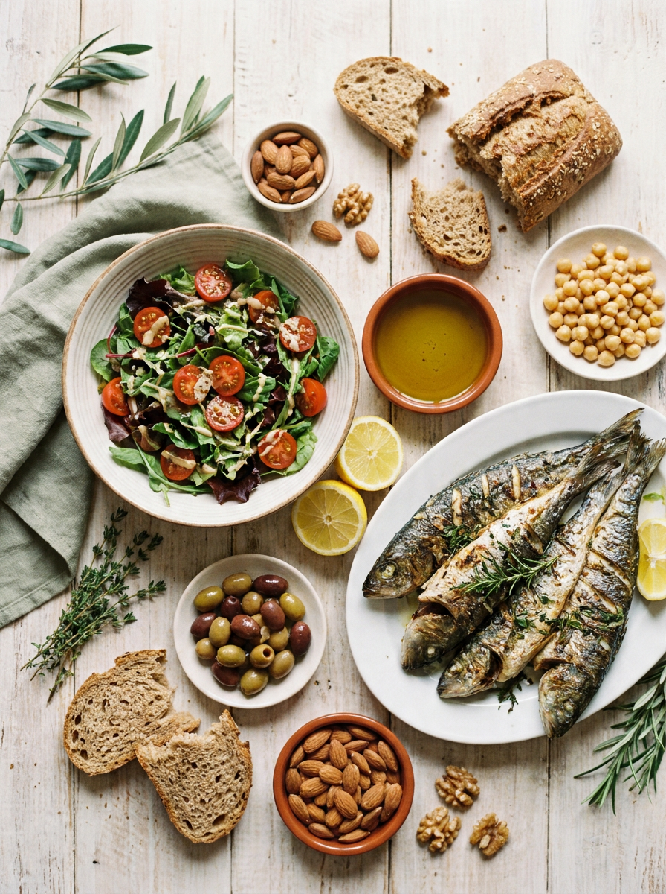
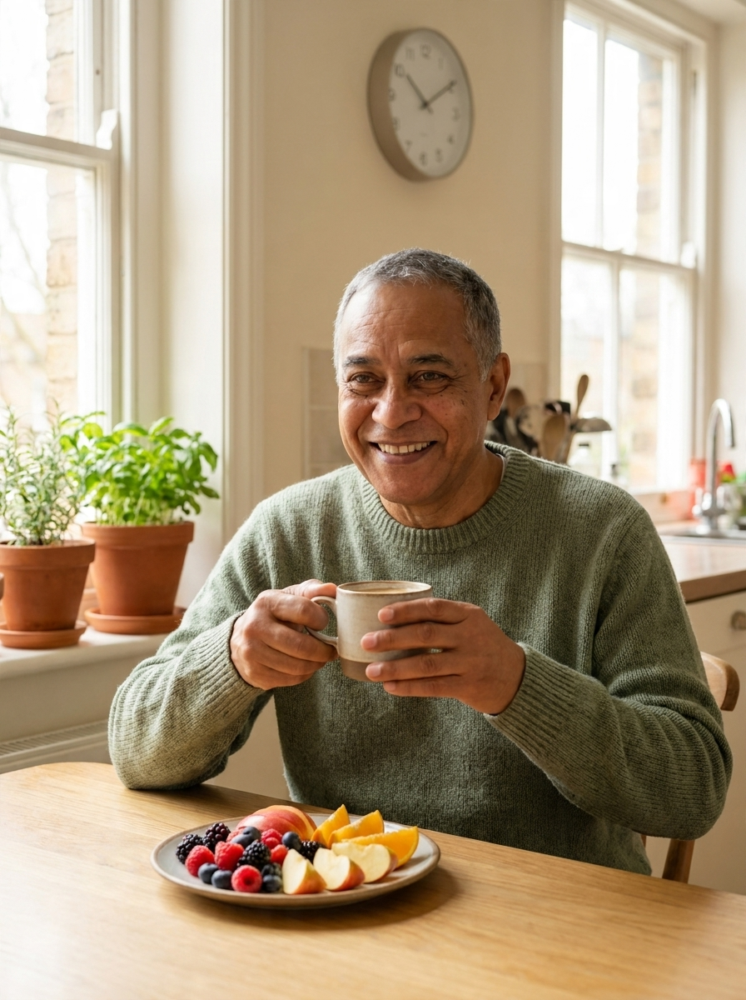
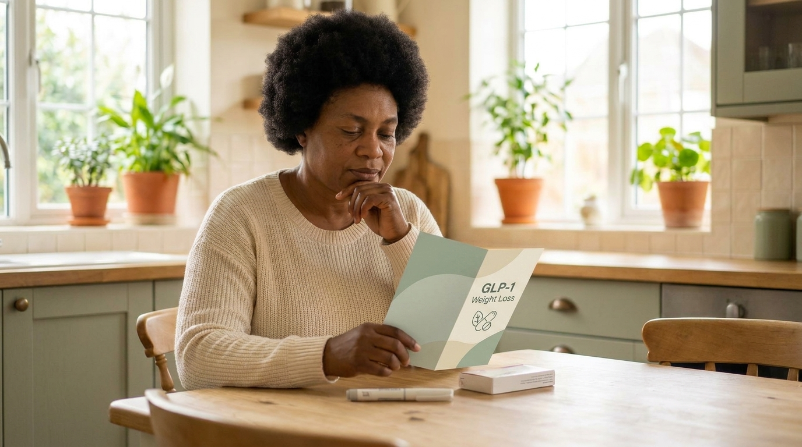
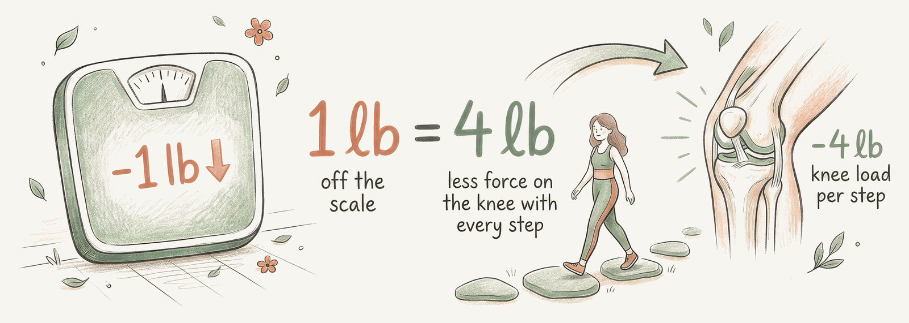

Small, realistic weight changes take real load and real inflammation off your knee. The math is genuinely on your side.

Two things happen when you carry extra weight.
First, the load. Every 1 pound you lose takes about 4 pounds of pressure off your knee with every step. Over a day of walking, that adds up fast(1).
Second, and less obvious, inflammation. Body fat is not inert. It releases signalling molecules that actively raise inflammation inside the joint. So losing weight lowers the chemical irritation in your knee, not just the physical pressure on it(1).

You do not need to reach an ideal weight to feel better. A 5 to 10 percent reduction over about six months produces meaningful pain relief on its own, and roughly a 7 percent loss is the point where pain relief became clearly significant across the trials(2, 1). If you weigh 200 pounds, that is about 14 pounds over six months, or close to half a pound a week. Steady and small beats fast and harsh.
Enter your weight to see how much to lose at each step.

🎉 Goal reached!There is no single required diet. A calorie aware approach, a Mediterranean pattern, a plant forward plan, or intermittent fasting all help when they actually produce weight loss. Pick the one you can live with. The strongest results came from pairing a calorie reduced diet with exercise: together they beat either one alone for weight, pain, and function(1). That is why this works hand in hand with your walking plan, not instead of it.




For some people, weight loss has been the missing piece, and the newer GLP-1 medications can help. In a 68 week trial, semaglutide 2.4 mg weekly produced much greater weight loss and pain improvement than diet plus exercise alone (about 13.7 percent versus 3.2 percent weight loss)(3). This is a physician decision, weighed against side effects and cost. If you and your doctor choose this path, keep doing your strength work to protect muscle, aim for adequate protein (around 1 gram per kilogram of body weight a day), and watch for nausea, slow digestion, or gallbladder symptoms.

1 pound off the scale is about 4 pounds off the knee with every step. You feel the benefit long before you reach any goal weight(1).
Weight works alongside movement and your cream, never as a punishment and never alone. Small, steady changes, paired with your walking and strengthening, are what move your pain over the months. If the scale will not budge or food is a struggle, message Clara and we will look at options together, including whether a medication review makes sense.
This guide is for education and is not a substitute for your Clara physician's advice. Your plan is personalized to you.